阅读词表
| 词条 | 拼音 | 类型 | 说明 |
|---|---|---|---|
| 周昌 | zhōu chāng | person | 周文王姬昌。 |
| 纣王 | zhòu wáng | person | 商朝末代王帝辛。 |
| 吕尚 | lǚ shàng | person | 姜太公名尚。 |
| 伯邑考 | bó yì kǎo | person | 文王长子。 |
| 殷都 | yīn dū | place | 商朝后期都城区域。 |
| 商王 | shāng wáng | person | 商朝王。 |
| 人牲 | rén shēng | concept | 被杀用于祭祀的人。 |
| 方伯 | fāng bó | concept | 商周时期受命统领一方的首领。 |
| 周方伯 | zhōu fāng bó | concept | 商王册封周族首领为方伯的身份。 |
| 易经 | yì jīng | text | 文王卦爻辞体系。 |
| 姜太公 | jiāng tài gōng | person | 吕尚，周初重要政治军事人物。 |
| 周文王 | zhōu wén wáng | person | 周族领袖姬昌。 |
| 盍 | hé | rare_word | 文言副词，何不。 |
| 人祭 | rén jì | concept | 杀人用于祭祀。 |
| 卦爻辞 | guà yáo cí | concept | 《易经》中卦辞和爻辞的合称。 |
| 鬯 | chàng | rare_word | 古代祭祀所用的香酒。 |
| 氒 | jué | rare_word | 古文字，通“厥”；本章见青铜器铭文。 |
| 膰 | fán | rare_word | 古代祭祀所用的熟肉。 |
| 谮 | zèn | rare_word | 说坏话诬陷别人。 |
| 彊 | jiàng | rare_word | 同“强”；本章“彊谏”读 jiàng，意为态度强硬不屈。 |
| 枼 | yè | rare_word | “叶”的古字；本章用来描述周原甲骨字形。 |
| 菹 | zū | rare_word | 古代酷刑或肉酱制作中的肢解处理；本章见“菹醢”。 |
| 脢 | méi | rare_word | 背脊肉；本章见《周易》“咸其脢”。 |
| 憧憧 | chōng chōng | rare_word | 形容往复不定或心神不宁。 |
| 戉 | yuè | rare_word | “钺”的古字，古代斧形兵器或礼器。 |
| 矍矍 | jué jué | rare_word | 惊视的样子。 |
| 烝 | zhēng | rare_word | 文言词，众、多。 |
| 掊 | póu | rare_word | 聚敛、搜刮；本章见《诗经·大雅·荡》。 |
| 炰烋 | páo xiāo | rare_word | 气势嚣张、暴怒咆哮的样子。 |
| 奰 | bì | rare_word | 盛怒；本章见《诗经·大雅·荡》。 |
| 诅咒 | zǔ zhòu | concept | 以宗教方式祈求灾祸降临敌方。 |
| 后冈H10 | hòu gāng H10 | 项目词典 | 殷墟后冈圆形祭祀坑编号，文中复原其献祭过程。 |
| 《合集》 | hé jí | 项目词典 | 《甲骨文合集》的简称。 |
| 文王大宅 | wén wáng dà zhái | 项目词典 | 周原遗址中的大型西周建筑基址。 |
| 甲骨刻辞 | jiǎ gǔ kè cí | 项目词典 | 刻在甲骨上的文字记录。 |
| 甲骨卜辞 | jiǎ gǔ bǔ cí | 项目词典 | 商代刻写在甲骨上的占卜文字。 | 刻写在龟甲兽骨上的占卜文字。 | 刻写在甲骨上的占卜记录。 | 刻写在龟甲兽骨上的占卜辞句。 |
| 腰坑殉狗 | yāo kēng xùn gǒu | 项目词典 | 在墓穴腰坑中埋狗的丧葬习俗。 | 墓穴腰部小坑中埋狗的商人葬俗。 |
| 周公旦 | zhōu gōng dàn | 项目词典 | 周初政治家。 | 西周初年政治家，文中指其取缔人祭风俗。 |
| 孔颖达 | kǒng yǐng dá | 项目词典 | 唐代经学家，《周易正义》编纂者之一。 |
| 宫殿区 | gōng diàn qū | 项目词典 | 都邑中宫殿和王室活动集中的区域。 |
| 王陵区 | wáng líng qū | 项目词典 | 王室墓葬集中的区域。 | 王室墓葬和祭祀坑集中的区域。 |
| 祭祀坑 | jì sì kēng | 项目词典 | 用于举行祭祀或埋入祭品的坑穴。 | 考古遗址中用于掩埋祭品或举行祭祀的坑穴。 | 用于祭祀或埋藏祭品的坑穴。 | 用于祭祀埋牲或埋人的坑穴。 | 考古遗址中用于祭祀、掩埋祭品或尸骨的坑穴。 |
| 老牛坡 | lǎo niú pō | 项目词典 | 西安附近商代遗址，文中涉及商人据点和人祭。 | 陕西西安商代遗址。 |
| 上帝 | shàng dì | 项目词典 | 商周宗教中的最高神。 |
| 中山 | zhōng shān | 项目词典 | 战国诸侯国，后为赵所灭。 |
| 亶父 | dǎn fǔ | 项目词典 | 古公亶父；周族迁居周原时的首领。 |
| 八卦 | bā guà | 项目词典 | 由三爻组成的八种基本卦象。 |
| 六经 | liù jīng | 项目词典 | 传统所称《诗》《书》《礼》《乐》《易》《春秋》。 |
| 分封 | fēn fēng | 项目词典 | 周初封邦建国制度。 |
| 卜辞 | bǔ cí | 项目词典 | 甲骨占卜后刻写或记录的辞句。 | 甲骨上记录占卜的文字。 | 占卜时刻写或记录的辞句。 |
| 卦象 | guà xiàng | 项目词典 | 由阴阳爻组成的卦形图象。 |
| 卦辞 | guà cí | 项目词典 | 解释一卦吉凶和意义的文字。 |
| 卫国 | wèi guó | 项目词典 | 周初分封诸侯国。 |
| 周公 | zhōu gōng | 项目词典 | 周公旦，武王之弟。 | 周公旦，周初政治家。 |
| 周原 | zhōu yuán | 项目词典 | 关中地区周族的重要活动中心。 | 关中地区周族重要遗址和活动中心。 | 周族核心区域。 |
| 周易 | zhōu yì | 项目词典 | 以《易经》及其传文构成的古代经典。 | 《易经》与后世《易传》合称的经典。 |
| 填土 | tián tǔ | 项目词典 | 填入坑穴或遗迹中的土层。 |
| 大特 | dà tè | 项目词典 | 大公牛；古代祭祀用牲。 |
| 太公 | tài gōng | 项目词典 | 姜太公吕尚。 |
| 夯土 | hāng tǔ | 项目词典 | 把土层层夯实形成建筑基础或城墙的技术。 |
| 奠基 | diàn jī | 项目词典 | 建筑开始时的基础工程或相关仪式。 | 建筑开始时的基础仪式或基础施工。 |
| 女乐 | nǚ yuè | 项目词典 | 女子组成的乐舞队伍。 |
| 孔子 | kǒng zǐ | 项目词典 | 春秋时期思想家、教育家，儒家学派的重要奠基者。 |
| 崇国 | chóng guó | 项目词典 | 商周之际西土方国。 |
| 左传 | zuǒ zhuàn | 项目词典 | 春秋史传文献。 |
| 征伐 | zhēng fá | 项目词典 | 出兵讨伐。 |
| 成王 | chéng wáng | 项目词典 | 周成王，武王之子。 |
| 捆绑 | kǔn bǎng | 项目词典 | 用绳索等束缚身体。 |
| 斧钺 | fǔ yuè | 项目词典 | 斧与钺，文中用于描述砍首祭祀的器具。 |
| 易传 | yì zhuàn | 项目词典 | 解释《易经》的传文总称。 |
| 春秋 | chūn qiū | 项目词典 | 孔子时代相关的编年史经典。 |
| 杀祭 | shā jì | 项目词典 | 以杀牲或杀人作为祭祀的仪式。 | 通过杀牲或杀人进行的祭祀。 | 通过杀人或杀牲举行的祭祀。 |
| 武王 | wǔ wáng | 项目词典 | 周武王。 |
| 殷商 | yīn shāng | 项目词典 | 商朝后期文化和政权。 | 商代后期以殷墟为中心的商王朝阶段。 |
| 殷墟 | yīn xū | 项目词典 | 晚商都邑遗址，甲骨卜辞的重要出土地。 | 商代晚期都城遗址。 |
| 海贝 | hǎi bèi | 项目词典 | 贝壳，古代可作装饰、随葬品或货币。 |
| 淫乱 | yín luàn | 项目词典 | 行为放纵失序。 |
| 灰坑 | huī kēng | 项目词典 | 考古遗迹中常见的垃圾坑或废弃坑。 | 遗址中含灰土、废弃物或祭祀遗存的坑穴。 |
| 爻辞 | yáo cí | 项目词典 | 解释每一爻吉凶和意义的文字。 |
| 牲祭 | shēng jì | 项目词典 | 以牛、羊、猪、狗等动物作为祭品的祭祀。 |
| 献祭 | xiàn jì | 项目词典 | 把祭品奉献给神灵或祖先。 | 向神灵、祖先等奉献祭品。 |
| 盆骨 | pén gǔ | 项目词典 | 骨盆，文中作“零碎盆骨”。 |
| 盟津 | méng jīn | 项目词典 | 黄河渡口，周武王伐纣相关地名。 |
| 祭品 | jì pǐn | 项目词典 | 祭祀时献给神灵或祖先的物品。 |
| 粟米 | sù mǐ | 项目词典 | 小米；北方旱作农业的重要作物。 |
| 羌人 | qiāng rén | 项目词典 | 西方族群，常见于商代卜辞。 |
| 翦商 | jiǎn shāng | 项目词典 | 周人剪灭商朝的政治行动。 | 剪除商朝，文中为全书核心主题。 |
| 肋骨 | lèi gǔ | 项目词典 | 胸部骨骼。 |
| 肢解 | zhī jiě | 项目词典 | 将肢体切割分解。 |
| 苏苏 | sū sū | 项目词典 | 细碎声；风吹叶动声。 |
| 蜷曲 | quán qū | 项目词典 | 弯曲、卷曲。 | 身体弯曲缩成一团。 |
| 西土 | xī tǔ | 项目词典 | 周族所在的西方地区。 |
| 诗经 | shī jīng | 项目词典 | 中国古代诗歌总集，儒家经典之一。 |
| 说客 | shuì kè | 项目词典 | 外交家 |
| 车辙 | chē zhé | 项目词典 | 车轮压出的痕迹。 |
| 都邑 | dū yì | 项目词典 | 作为政治中心的大型聚落或城市。 |
| 酋长 | qiú zhǎng | 项目词典 | 部落或地方共同体的首领。 |
| 野史 | 项目词典 | 私家编撰的史书。有别于官修的“正史”而言。 | |
| 铜戈 | tóng gē | 项目词典 | 青铜戈，古代横刃长柄兵器。 | 青铜戈，商周常见兵器。 |
| 铜钺 | tóng yuè | 项目词典 | 青铜钺，常象征军事权力。 |
| 高亨 | gāo hēng | 项目词典 | 现代《周易》研究学者。 | 文史学者，文中引用其对《易经》的解释。 |
| 鲁国 | lǔ guó | 项目词典 | 周公后裔封国。 |
青铜器词表
| 器名 | 拼音 | 类型 | 说明 |
|---|---|---|---|
| 钺 | yuè | bronze_item | 大型斧形兵器或礼器。 |
| 敦 | duì | bronze_item | 古代盛饭食的器皿。 |
| 匕 | bǐ | bronze_item | 古代取食器，形似长柄浅勺。 |
| 彝 | yí | bronze_item | 古代盛酒器，也泛指宗庙祭器。 |
| 戈 | gē | bronze_item | 古代横刃长柄兵器。 |
| 簋 | guǐ | bronze_item | 古代盛食物的器具。 |
疑难古文字与 OCR 校读表
| 来源 | 当前文字 | 问题 | 处理 |
|---|---|---|---|
| 原阅452、453、461／原PDF450、451、459：册封或祭祀字 | （册口） | 人工校订已统一用“册口”描述字形，但该古文字的规范释字和读音仍未确定。 | 结合周原甲骨 H11.82、H11.84、《合集》1027正及王宇信论文核定释字和读音。 |
| 原阅452／原PDF450：周原甲骨 H11.82 | 〔待核：由；上撇下田〕 | 字形为上撇下田，“由”仅为 OCR 候选。 | 据 H11.82 拓片及释文核定。 |
| 原阅452／原PDF450：周原甲骨 H11.84 祭名 | （甲骨文，形似枼） | 人工校订确认字形近“枼”，但尚未给出规范释字。 | 据 H11.84 拓片及权威释文核定；正文暂保留字形描述。 |
| 原阅452／原PDF450：周原甲骨 H11.84 献祭字 | 〔待核：盍；上妻下皿〕 | 字形为上妻下皿，表示杀女子献祭；“盍”仅为 OCR 候选。 | 据陈全方临摹、H11.84 拓片及释文核定。 |
章节导读札记
| 主题 | 札记 | 操作 |
|---|---|---|
| 暂无章节导读札记 | ||
用户札记
| 类型 | 页 | 内容 |
|---|---|---|
| 暂无用户札记 | ||
原书阅读器页 443原书物理 PDF 页 441印刷页 429
第二十三章姜太公与周方伯
美里囚禁结束之后，文王周昌一度靠易卦预测技能受到纣王的赏识，他在殷都的儿子们应该也颇为显赫。甚至，他可能就是在这里结识他的事业合伙人吕尚，也就是后世所谓的“姜太公”的。
但是，随后发生的伯邑考被杀祭事件，成为商周关系的重要转折点。从此，周族不可逆转地走上了灭商之路。
“姜太公”为何有很多名称
“姜太公”是商周之际的历史名人，辅佐文王和武王灭商，开创齐国，声名赫赫。但在史书的记载中，他的身份却很混乱，称呼也有很多，如吕尚和太公望，等等。这可能和当时的称谓习俗以及他本身过于复杂的经历都有关系。
先说知名度最高的“姜太公”，也就是姜尚。这是战国以后的人给他的称呼。姜是族姓，代表广义的族群，说明他是羌人。不过，按当时西土的习惯，族姓只能用于称呼女子，不能用于男子，所以“六经”里不会有姜尚、姬昌、姬发和姬旦等称呼。但在战国后，这些礼俗就被忘掉了。
姜尚，又叫吕尚，属于羌人中的一个吕氏部族。同一个族姓之内，会有许多个氏（氏族、部族），氏才是称呼男人用的，比如周文王家族，周就是他们的氏。
《史记•齐太公世家》说：“太公望吕尚者，东海上人。”“东海上人”和西土方向正相反。这很可能是因为西周建立之后，为了镇抚东部地区，吕尚被封到了山东地区的齐国，从而让司马迁产生了误解，以为吕尚的故乡在东方。
但另一方面，吕尚确实没有一直生活在西部，他的人生满是漂泊，这也让司马迁难以辨别真伪，于是记录下了好几种说法。
一说吕尚曾为商纣王服务，但看到纣王的种种不良行径后，很是失望，转而去西土。有一天，他在渭水之滨垂钓，因遇到周文王而受重用。文王说，“我家先君太公（文王祖父亶父）在世的时候，一直盼望可以有你这样的人振兴周邦”，所以，称吕尚为“太公望”，所谓“吾太公望子久矣”。这里的“太公”并非指吕尚，而是文王的祖父，只是后世将错就错，衍生出“姜太公”以及知名度较低的“吕望”这样的称呼。又据说，文王和武王都尊吕尚为师，所以他又被称为“师尚父”。在没有户籍制度的时代，经历复杂且身份切换多的人，通常名字也多，吕尚就是如此。
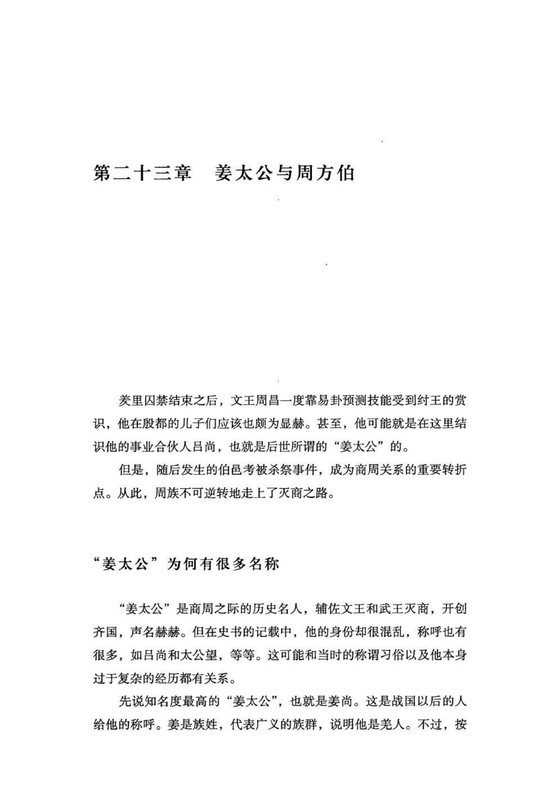
原书阅读器页 444原书物理 PDF 页 442印刷页 430
还有一种说法：吕尚本来在东海之滨隐居，文王周昌被纣王囚禁美里之后，散宜生和闳夭久闻吕尚之名而召请其加盟周邦，一起营救周昌。吕尚曰：“吾闻西伯贤，又善养老，盍往焉。”
但上述内容都属于战国说客故事的翻版，和商周之际的真实历史完全不同。在身份世袭的商周时代，不会有民间隐士而一举成为帝王师的，至少也要出自小酋长家族方有外出活动的资本。
但作为西部羌人，吕尚的身上却又有明显的商朝烙印。他的好几代子孙（齐国国君）采用的都是商人的命名方式一一“日名”，也就是以生日的天干命名：“盖太公之卒百有馀年，子丁公吕仅立。丁公卒，子乙公得立。乙公卒，子癸公慈母立。”（《史记•齐太公世家》）近年出土的一件春秋时期的“丰启作氒（jue2）祖甲齐公尊彝”，乃齐侯“丰”纪念先祖“祖甲齐公”的青铜器。“祖甲齐公”就是吕尚，看来他自己的日名是甲，祖甲则是后人对他的尊称。
为周邦效力之后，吕尚提供了很多军事谋略，所谓：“太公佐周，实秉阴谋。”他显然是个“知商派”，不是西土部落环境能培养出来的人物。
从战国到秦汉，有不止一种文献提及，吕尚曾经在殷都当屠夫，有人说是屠牛，也有人说他只是“屠佐”，也就是屠夫的助手，地位更低。[[fn:1]] 不过，秦汉时人已不知殷都在何处，结果就写成了“朝歌”：“太公望年七十，屠牛朝歌，卖食盟津。”[[fn:2]]
吕尚和文王周昌的初次见面，似乎发生在殷都的屠宰场。战国诗人屈原罗列各种古史传说，写成长诗《天问》，其中有一句是这样质问：“师望在肆，（周）昌何识？鼓刀扬声，后何喜？”翻译成白话是，吕尚在屠肆里挥刀宰杀，周昌是怎么认识他的？听到他的声音又为何欢喜？[[fn:3]]
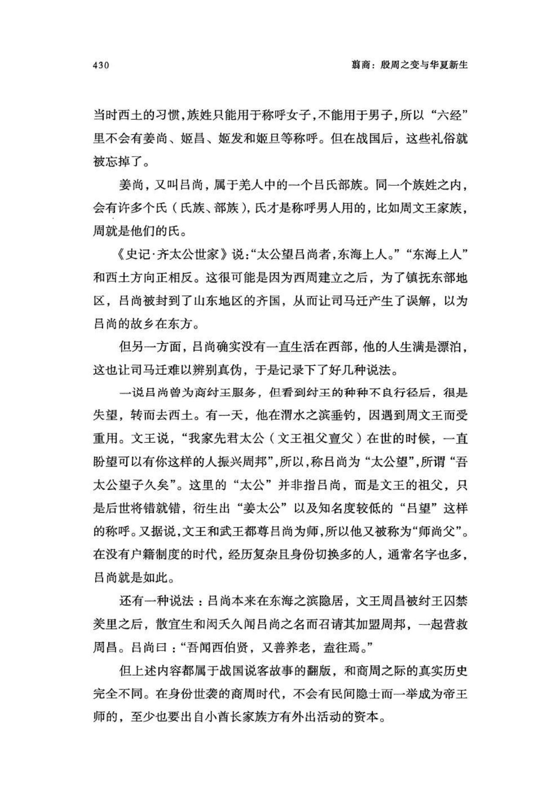
原书阅读器页 445原书物理 PDF 页 443印刷页 431
在人类的早期文明中，屠夫职业往往和贱民身份相联系。结合吕尚的羌人出身，他可能本是羌人吕氏部落的首领之子，年轻时被俘获而作为人牲献给商朝（或许是青年周昌的战果）。但被送到殷都后，又由于某些偶然原因，吕尚侥幸逃脱了被献祭的命运，并被某个从事屠宰业的贱民族群接纳，然后娶妻生子。这也可以解释为什么他的后人的名字有明显的商人特征。
在《天问》里，吕尚是在一家个体经营的肉铺（肆）工作，但这是屈原根据战国社会情境的想象，商代殷都的屠宰场还不是这样。
殷都屠宰场的贱民
1986年，考古队在殷墟花园庄南地发掘出一个巨大的废弃骨料坑（H27），由此可一窥殷都屠夫们的生活。[[fn:4]] H27在宫殿区西南方500米处，椭圆形，长约40米，最深处4米，由于部分被现代民房压住，故而无法发掘，估计总面积为550平方米。
坑内堆积的骨头约有30万块，绝大多数是牛骨，其余是猪骨、狗骨、鹿骨及人骨。骨头都是零碎的，没有利用价值的头骨、脊椎骨和盆骨较多，适合加工成骨器的肢骨和肋骨很少。
骨坑很大，表层有十几条车辙印，宽度在10—15厘米之间，有一对平行的双轮车辙，轮距1.5米，可能是一辆双辕牛车留下的，其余车辙都不平行，说明是独轮车。看来，当时的人应该是用手推车和畜力撤倾倒废骨的。
发掘者推测，大骨坑附近应当有一座屠宰场，剔出的骨头被分拣后，有用的送到骨器作坊，没用的则填埋到大坑里。
从坑内的陶片形制推断，倾倒骨头的时间跨殷墟三期和四期，大约从武乙到文丁、帝乙（纣王的父亲）的数十年时间。当然，这不代表到纣王时屠宰场就停工了，而只是说这座骨坑已被填满。但因骨坑紧挨着今花园庄村，目前还无法继续探测屠宰场的位置。
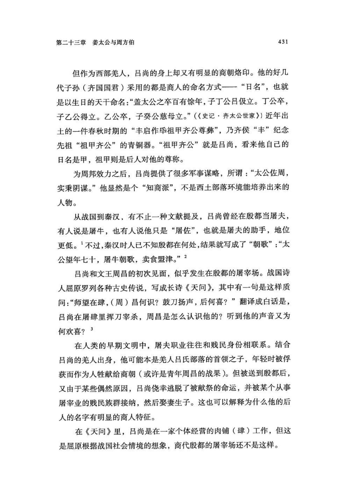
原书阅读器页 446原书物理 PDF 页 444印刷页 432
在殷墟曾发掘多座骨器作坊遗址和废骨坑，但花园庄南的H27是规模最大的，而且，它距离商王宫殿区很近，很可能是商代后期祭祀牛牲的屠宰地点。
在甲骨卜辞的记载中，用于献祭的牛和人的数量级大体相当，此外，还有猪、狗和羊。商王陵墓区东侧发掘出两千多座密密麻麻的祭祀坑，埋葬人牲超过万人，但埋葬整牛或其他家畜的坑却远没有这么多，这和甲骨卜辞完全对不上。
那么，这些被献祭的牲畜都去了哪里？
一种可能是，祭祀仪式后，多数献祭用的牛、羊和猪等家畜会被参加者吃掉，而用于献祭的人牲则多数不会被吃掉，所以会形成王陵区的大量人祭坑。
另一种可能是，献祭人牲和家畜的场所不一样。人牲会被押送到王陵区祭祀场处死、填埋，而多数以牛为代表的家畜则是在王宫区附近杀死献祭，然后是盛大的宴会。
当然，这不代表没有人牲被吃掉，比如，不仅王陵区祭祀坑中有少数被肢解的人骨，H27废骨坑中也有些零星散碎的人骨，但总体而言，其数量还是要远远低于牛碎骨。
祭品是献给鬼神的食品，活人也可以参与分享，这是自新石器时代以来的习惯，直到周代依旧通行。《仪礼》记载了周代的几种祭礼程序，都是先用食物祭祖（供奉给扮演祖先的人），然后由仪式参与者分食。也就是说，分享祭肉是当时公认的礼仪。春秋中后期，孔子担任鲁国大司寇时，就曾因“（季）桓子卒受齐女乐，三日不听政”且“郊，又不致膰（fan2）俎（祭肉）于大夫”愤而辞职。
这样，我们也就能理解商王为何要频繁地举行杀牲祭祀了，这不仅是向诸神和列祖列宗贡献餐食，也是满足王族成员酒肉之欲的盛大宴会。从武丁朝的甲骨卜辞可见，商王动辄举行数十甚至上百头牛的大祭祀。而《史记》记载的商纣王的荒淫无度和酒池肉林（“以酒为池，悬肉为林”），其实正是典型的商王祭祀场面，并不专属于纣王。
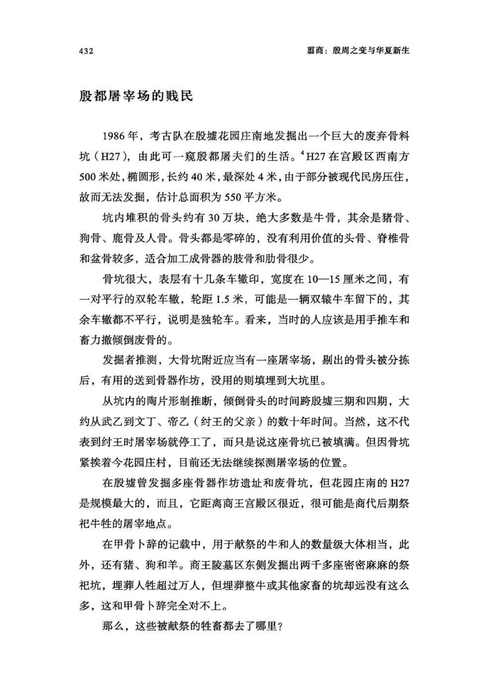
原书阅读器页 447原书物理 PDF 页 445印刷页 433
花园庄的这个王室大屠宰场周边，应该生活着一个贱民村落，村民可能世代要为屠场提供劳役。一方面，大骨坑中有丢弃的生活垃圾，如石斧、收割用石刀、打鱼的陶网坠和纺线的陶纺轮等，说明他们还有农业和渔业劳作。另一方面，坑里出土的农具数量不多，可能居民的部分食物来自屠宰场的下脚料，或用粗加工的骨头与外面交换。
大骨坑旁边有十余座墓葬，都是小型墓，随葬品较少，五座有腰坑殉狗。其中，M5是一名男子的墓，随葬一件铜戈和八枚海贝。他可能是这个贱民小族群的首领。
M3是一座祭祀坑，紧挨M5的头端，里面埋了两具被砍掉了手脚的儿童尸骨，头朝向主人（西），可见，这个贱民小族群也有自己微弱的武装，还尽量用人牲祭祀自己的头领。此外，还有两座墓随葬了海贝，作为都城，这里的“商品经济”应该比其他地区略为发达一些。
至于文王父子在殷都遇到贱民屠夫吕尚的具体情节，现在已经无法考证。虽然都是西土之人，但他们应该没有太多共同语言：周人和羌人已经连续三代为敌，现在周昌父子已属商朝上层圈子，吕尚却是殷都的底层贱民，更何况他们可能还有私仇。
但有一点很清楚，那便是，武王周发后来娶了吕尚的女儿，这位周朝开国王后被称为“邑姜”：“邑姜，武王后，齐太公女也（《左传•昭公元年》服虔注）这个“邑”字颇不寻常，它并非吕尚家族的天干日名，却和文王长子周邑（伯邑考）同名。
这应该不是巧合，邑姜的名字很可能就来自周邑。也就是说，周邑才是邑姜的第一任丈夫。周邑不幸早逝后，邑姜这才改嫁其二弟武王周发，但保留了首任丈夫的名字以作为纪念。这也许不符合后世周人的礼法，不过，在文王和武王一代还并没有后世的礼法。周朝开国后尊周邑为“考”（父），应该也与此有关。
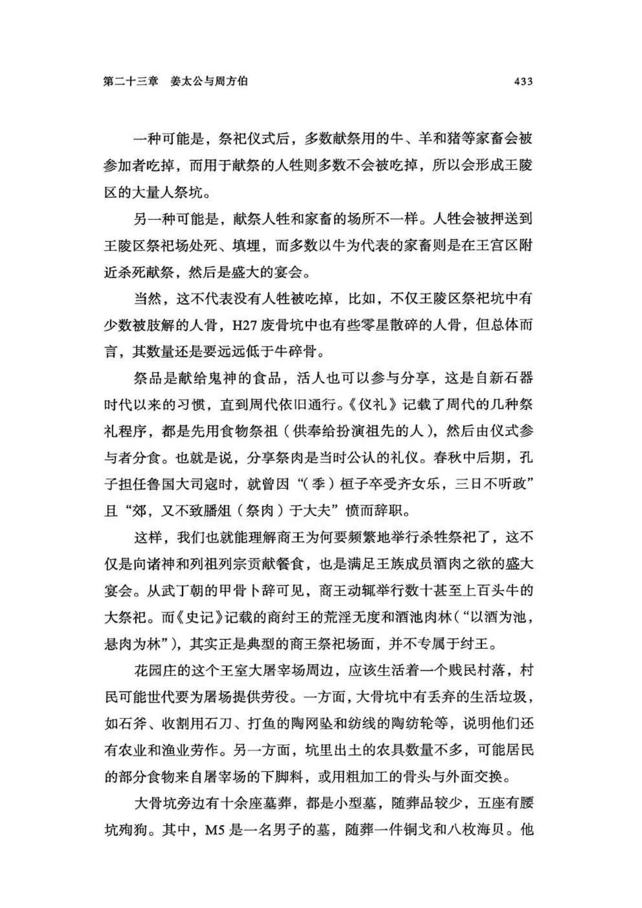
原书阅读器页 448原书物理 PDF 页 446印刷页 434
周文王和吕尚的关系，很可能就是从伯邑考和邑姜的相识开始的。伯邑考是纣王的御者，平时住在王宫内，而往西南方散步，穿过占卜师居住区（现代的小屯村）就是屠宰场，很可能某一女子正在捡拾骨头，偶然遇见了这个看上去有点像西土来客的年轻贵人（和她父亲的身世类似），然后开始了一段不寻常的故事。
在一开始，对于周邑和邑姜的恋情，双方的父亲应该都不会赞成。在吕尚眼里，周族是商朝的无耻帮凶和吕氏部族的仇家；而周昌则指望周邑联姻一家显赫的邦国，至少是苏妲己的母国苏国的级别，倘若下一任族长夫人出身殷都贱民，且她的父亲还是个老羌人，周族在商朝的形象会大打折扣。
但看来周昌不是一个固执的人，对《易经》的钻研也让他明白，世界有多种可能性，不如先看看这女子家族的情况，也许会有意想不到的转机。〔札记：凡是辩证法都灵活〕
在《易经》中，家人卦的主要内容是家庭生活的烦琐和温情；而和它成对的，则是睽卦[[editor-fn:1]]，字义是乖离。睽卦的内容非常诡异，讲的是周昌的一次看上去让人莫名其妙的行程，像是去到了都市中的贫民窟（屠宰场），充斥着肮脏和混乱，而且无知的贱民也对这外来者充满着敌意。
初九爻曰：“悔亡，丧马，勿逐，自复。见恶人，无咎。” 是说后悔丢失东西。马丢了，不用追，自己会回来。遇见恶人，没有灾祸。
九二爻曰：“遇主于巷，无咎。”是说（马）又在巷子里遇到主人，没有灾祸。
六三爻曰：“见舆曳，其牛掣，其人天且劓。无初有终。”是说见到一辆车困在路上，牛拉不动了。赶车的人额头刺字，鼻子被割掉了。没有开端，但有结果。
九四爻曰：“睽孤，遇元夫[[fn:5]] ，交孚。厉，无咎。”是说一个人离开，遇到一个高个子，正在把俘虏绑起来。不顺利，也没有灾祸。
〔编者注1〕睽卦 https://ctext.org/wiki.pl?if=gb&chapter=997391
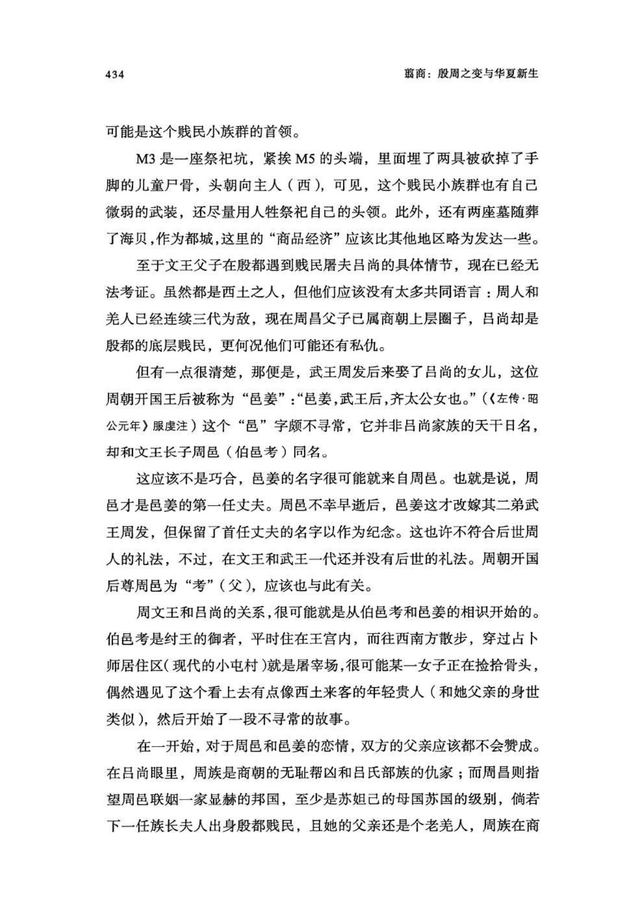
原书阅读器页 449原书物理 PDF 页 447印刷页 435
六五爻曰：“悔亡。厥宗噬肤。往，何咎？ ”是说后悔丢失东西。那家人在吃肉皮。去吧，有什么灾祸？
上九爻曰：“睽孤，见豕负涂，载鬼一车。先张之弧，后说之弧。匪寇，婚媾。往，遇雨则吉。”是说意见不合，看见猪在泥坑里，有人拉着一车鬼。有人先张开了弓，又放下了弓。不是劫匪，是要成婚。去吧，遇到下雨会吉利。
根据睽卦的卦爻辞，周昌应当是驾车去的屠宰场，还把马车放在了巷子外，结果马丢了（“丧马”，也许是被偷走了），后又在巷子里找到了（“遇主于巷”）。他看见，有额头刺字、鼻子被割掉的贱民（“其人天且劓”）正赶着牛车运送骨头，而且很可能是人骨，因为有一个高个子正在捆绑俘虏（“遇元夫，交孚”）。在笃信算命通神的周昌看来，这简直是一车鬼魂（“载鬼一车”）。他还看见那家人更不体面，在啃吃肉皮（“厥宗噬肤”，应该是来自屠宰场的下脚料，在羡里地牢里，周昌也经常吃）。但最后的上九爻，居然以婚事结尾（“婚媾”）。
也就是说，这次到访屠村，周昌应当是和吕尚达成了共识：此时，周昌已经在密谋“翦商”大业，吕尚表示支持。这标志着周族要回归羌人的亲友阵营，一起对付强大而残暴的商朝。
周邑和邑姜应该不会在殷都正式办婚事，否则这太有损周族在商朝的名声。一切都可以留待以后。〔札记：这一卦解释合情合理〕
商王册封“周方伯”
《史记》记载，在周昌的臣僚向纣王进贡大量礼物后，纣王开恩赦免了周昌，为表忠心，周昌又向纣王贡献了一块“洛西之地”，于是，纣王赐周昌弓矢和斧钺，授西土征伐之权，称号为“西伯”。
〔按语：西伯利亚〕[[editor-fn:2]]
纣乃赦西伯。西伯出而献洛西之地，以请除炮烙之刑。纣乃许之，赐弓矢斧钺，使得征伐，为西伯。（《史记•殷本纪》）
〔编者注2〕西伯利亚。这一块地覆盖整个西伯利亚，马车可及之处皆是。
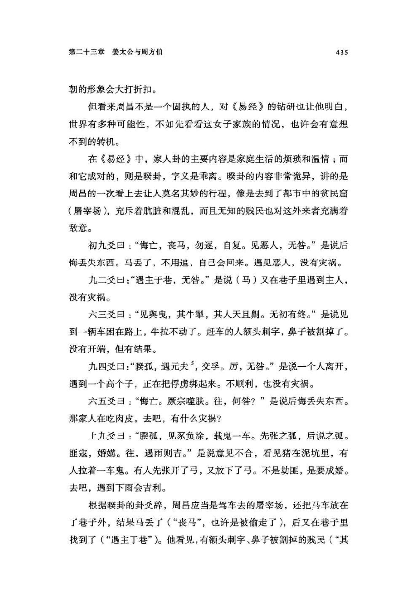
原书阅读器页 450原书物理 PDF 页 448印刷页 436
乃赦西伯，赐之弓矢斧钺，使西伯得征伐。曰：“谮西伯者，崇侯虎也。”西伯乃献洛西之地，以请纣去炮烙之刑。纣许之。（《史记•周本纪》）
这种赐弓矢和斧钺并授予征伐之权的做法，并不见于商代的甲骨文和金文，更像是西周以来分封制度的规则，甚至是春秋时期周王室对齐桓公和晋文公等“霸主”的授权。齐国人管仲曾经追溯齐国在周朝诸侯中的地位（当初周王授予太公吕尚征伐之权）：“昔召康公命我先君大公曰‘五侯九伯，女实征之，以夹辅周室！‘ 赐我先君履：东至于海，西至于河，南至于穆陵，北至于无棣。”（《左传•僖公四年》）结果，这种春秋时人的观念传到战国和秦汉以后，成为书写文王和商纣故事的母题。
《史记》所说的周昌向纣王贡献的“洛西之地”，可能在渭河北支流“西洛水”的西侧，距周原有点远，反而比较靠近西安老牛坡的崇国。从当时的形势看，周族不大可能扩张到这里，恐怕只是后人的想象。
战国诸子及司马迁的叙事总喜欢把商朝的灭亡归因于纣王的残暴和道德堕落。《史记•殷本纪》说，纣王曾经创制“炮烙之刑”：“纣乃重刑辟，有炮格之法，炊炭其下，使罪人步其上。”后世学者对此的注解是，这是让人在火炭烧红的铜柱上走路：“膏铜柱，下加之炭，令有罪者行焉，辄堕炭中，妲己笑，名曰炮烙之刑。"（《列女传》释）其实，这应当是商人惯用的“燎”祭或“燔”祭。火烧祭品的起源非常古老，新石器遗址就经常发现祭坛、炭灰与烧过的骨头，人类古文明也大都有烧烤献祭的记载，如《圣经•旧约》。因而，这并不是商纣首创。
《史记•殷本纪》还说，周昌获释之后，“献洛西之地”请求纣王不再使用“炮烙之刑”，“纣乃许之”。这实乃后世的一种道德叙事，并不符合当时的规则。
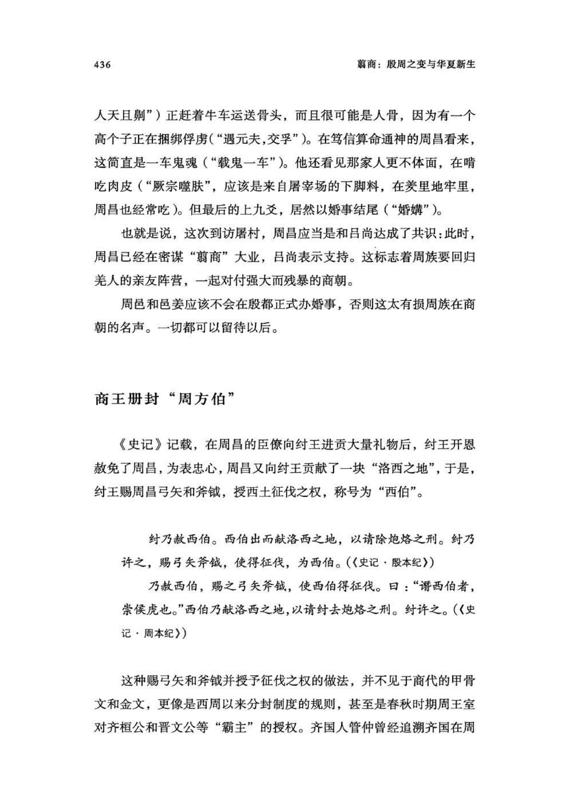
原书阅读器页 451原书物理 PDF 页 449印刷页 437
纣王时期的一大特点是，不仅杀祭异族人牲，也用商人贵族献祭。前述殷墟后冈H10祭祀坑就埋有数十具贵族尸体，而且填土中亦有大量炭灰和烧过的骨头。此外，还有史书记载的纣王杀戮王朝重臣并让人吃掉的行为，所谓“醢九侯”“脯鄂侯” “剖比干”。
九侯有好女，人之纣。九侯女不喜淫，纣怒，杀之，而醢九侯。鄂侯争之强，辨之疾，并脯鄂侯。
纣愈淫乱不止……比干曰：“为人臣者，不得不以死争。”乃彊（jiang4）谏纣。纣怒日：“吾闻圣人心有七窍。”剖比干，观其心。（《史记•殷本纪》）
这自然会在商人显贵和周族等附庸上层引发极大恐惧，形成纣王残暴的种种传闻。然而，到西周后，人们已经忘记商人的鬼神血祭文化，只剩纣王个人的种种荒淫故事保留了下来。
根据考古和甲骨卜辞提供的真实历史背景，周昌可以被商朝称为“伯”，但说他被封为可以征伐列国的“西伯”，则应当是虚构的。毕竟，老牛坡有商人的崇侯之国，还轮不到周族来任意征伐西土。〔札记：西伯利亚的自古以来早于商周〕
从古公亶父迁居周原开始，周人就有拉商朝大旗抬高自己的传统。如前述，来自挚国的大任和莘国的大姒，皆被周人史诗说成“天之妹”和“自彼殷商”，甚至《易经》中还有“帝乙归妹”之谓，这样看来，周昌被宣扬成有征伐西土之权的“西伯”也就是顺理成章的了。
不过，纣王确实曾授予周这个小番邦一点正式名分。记录周昌随纣王南征的师卦上六爻曰：“大君有命，开国承家，小人勿用。”意思是说，大君发布命令，让我（周昌）建立国家，世代传承下去，不要任用小人。
殷墟考古并没有发现册封周昌的甲骨记录，但在周原的“文王大宅”找到了，而且不止一片。
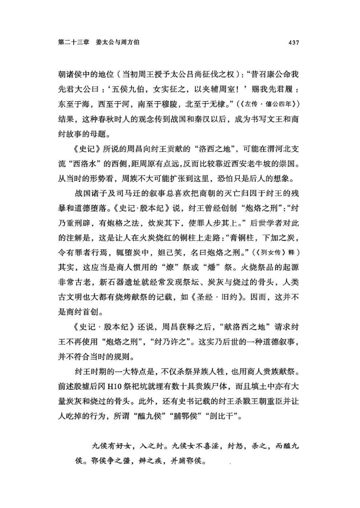
原书阅读器页 452原书物理 PDF 页 450印刷页 438
先看有残缺的第一片：
……才（在）文武……王其邵帝天□，典（册口）[[editor-fn:7]]周方伯？□〔待核：由；上撇下田〕（上撇下田，形似由）正，亡左……王受有祐。（周原甲骨H11.82）
大意是说，纣王祭祀先王，询问是否应当“典册周方伯”；结果是顺利，纣王会受到先王的保佑。
在这条卜辞里，纣王可能祭祀了两位先王：第一位是“文武口”，可能是其祖父文丁（文武丁）；第二位是“天口”，可能是大甲，商朝第四代王，因为第二片甲骨的卜辞中也出现了大甲。“邵”是祭祀方式，“帝”可能是上帝，也可能是对大甲的尊称。
再来看完整的第二片：
贞：王其（甲骨文，形似枼（ye4））侑大甲，（册口）周方伯，〔待核：盍；上妻下皿〕（上妻下皿），由正？不左，于受有佑。
（周原甲骨H11.84）
这里是说，举行占卜，纣王向先王大甲献祭，询问是否应当“册周方伯”；结果是顺利，纣王会受到先王的保佑。
“册周方伯”后面的〔待核：盍；上妻下皿〕（上妻下皿）字，出自曾任周原考古队队长的陈全方先生的临摹与释读。〔待核：盍；上妻下皿〕（上妻下皿）的甲骨文字形，是一只手抓着一名女子，下面放着一个接血的盆，一种杀女子献祭的方式。[[fn:6]]
在《史记》中，亶父和季历并没有“伯”的头衔，只有周昌有“西伯”称号。所谓“西伯”固然有周人夸大吹嘘的成分在里面，但看来到周昌的确是有了“伯”的头衔。如前述，倘若前两代就已经获此称号，周人肯定会更夸张地将其载入史书。当然，如上述两片周原甲骨所载，纣王授予周昌的真正头衔是“周方伯”，仅是认可周作为一个西方小邦而已。
周原甲骨H11.82（图）
周原甲骨H11.84（图）
按理说，册封仪式应当在殷都举行，为什么这些甲骨会出现在周原的“文王大宅”？李学勤先生认为：“这些是周人替商王占卜的龟甲，其年代可定为周文王时……这些片龟甲有可能是从商朝都邑带回的。”[[fn:7]] 但问题是：一，商王册封周方伯的决策为何要由周人来占卜？截至目前，从未发现商王有把占卜后的甲骨赐给臣下的记录。二，这两片甲骨非常小，上面的字小如粟米，根本不适合这种礼仪用途。三，甲骨记载的内容发生在殷都的商王朝廷，但制作风格却又是周原“文王大宅”的。真可谓谜团重重。
〔编者注7〕你说的是周原甲骨里面的吗？1977年出土的纣王时期的殷商甲骨文记载：“贞：王其拜又大甲册（册口）周方伯”（商王礼拜太甲，祈祷保佑，杀周方伯祭祀）。此处的“册（册口）”是宰杀后摆好的意思，读音我就不知道了。
有篇论文叫《周原庙祭甲骨“(册口)周方伯”辨析》,你可以找来看下。这个字是“右”，念 yòu。https://zhidao.baidu.com/question/1608158928040357467
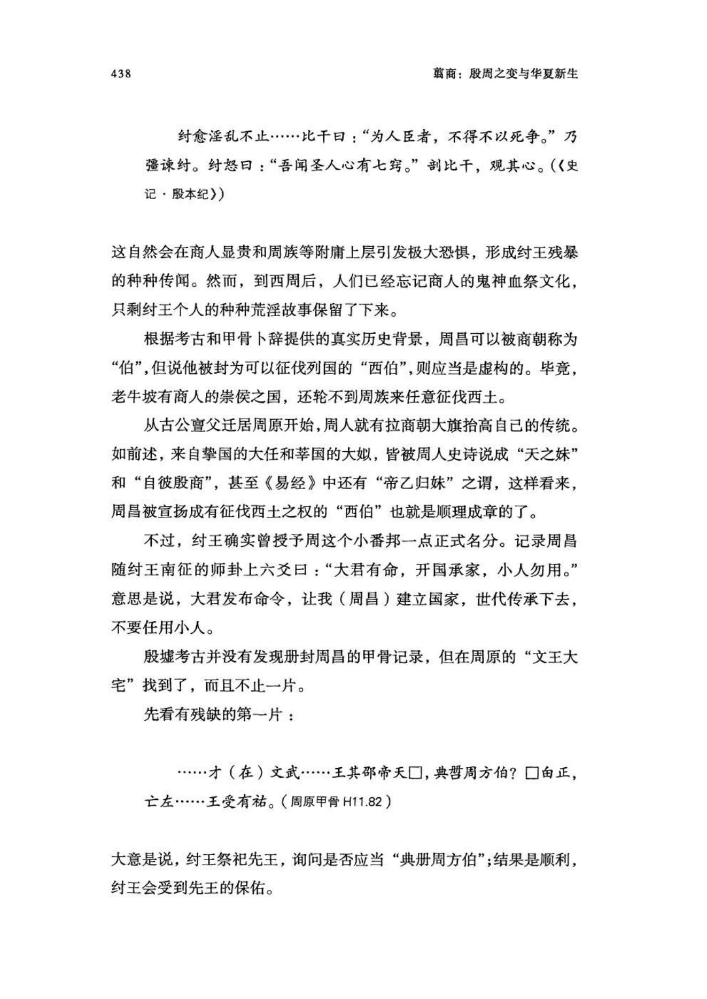
原书阅读器页 453原书物理 PDF 页 451印刷页 439
对此，本书的推测是：册封仪式的确是在殷都举行的，周昌也目睹了商王占卜和刻写卜辞的过程，并牢牢地将其记下，待回到周原后，为了获得商王占卜通神的能力和推进自己的“翦商”事业，他偷偷地模仿了整个过程，包括刻写卜辞，而且为了保密，他还采用了非常细小的微雕字体。或许在周昌看来，只要能完整地再现祭祀和占卜的过程，也就等于掌握了商人与先王（诸神）沟通的方式，从此，他就可以单独地联络诸神与商朝先王了。
此外，这两片甲骨上的“周”和殷墟卜辞中的很不同，它的上半部更像是“用”字，而且下面还多了一个“口：许慎在《说文解字》中对“周”字的解释是：“从用，从口。”看来，其渊源应该就是周原“文王大宅”的甲骨刻辞。
在甲骨文里，“用”字有专门的含义，指杀掉献祭的人或牲畜，如“用羌”或“用牛”，这几乎是它在商王卜辞中的唯一含义，且使用次数极多。所以，“从用，从口”的“周”也可能是商王室为姬周族特意造的字，象征其职能就是为商朝提供“用”的人牲，只是目前的材料尚不足以为此提供确证。
被吃掉的长子
这两片周原甲骨上的“册”字，下面也加了一个“口在甲骨卜辞里，这个皙字更常见的意思是指一种杀牲畜或人祭祀的方式。商王经常（册口）牛、（册口）羊、（册口）羌人献给列祖列宗。[[fn:8]]
但（册口）的字义还有争议，因为在一片龟甲卜辞里，武丁王曾经询问：是否应替一千头牛，或者是一千头牛再加一千个人？
占：其（册口）千牛？其降（册口）千牛、千人？（《合集》1027正）
千，这个数量实在太大。武丁王时期，征战频繁，也许能积攒起一千名俘虏一次性献祭，且王陵区已发现两千多座祭祀坑，但要说杀一千头牛，实在过于夸张，当时殷都的全部人口也不可能一次吃完一千头牛。所以有学者认为，（册口）只是把备用的祭品登记在册，留待以后慢慢使用。但问题是，倘若只是登记在册，又何必通过庄严的占卜来决定？
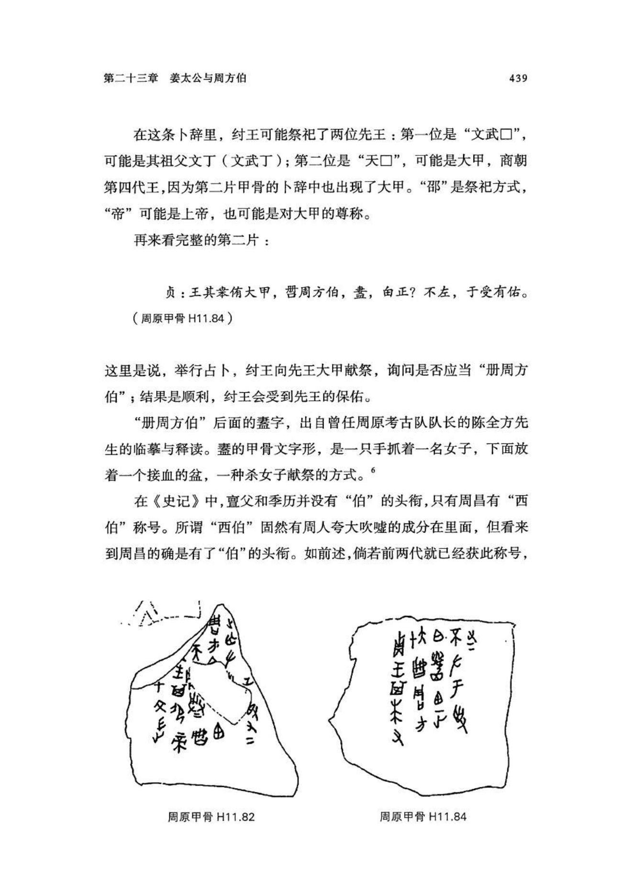
原书阅读器页 454原书物理 PDF 页 452印刷页 440
这是甲骨文给我们留下的又一个谜团。
商人的（册口）有两种意思，一是册封，一是献祭；而周原“文王大宅”这两片甲骨上的（册口），可能两种意思兼有，因为周昌的继承人伯邑考（周邑）成了商纣王的祭品。
伯邑考被杀祭，未见《史记》等比较正统的史书记载，主要见于西晋皇甫谧的《帝王世纪》：
囚文王，文王之长子曰伯邑考，质于殷，为纣御，纣烹为羹，赐文王，曰：“圣人当不食其子羹。”文王食之。纣日：“谁谓西伯圣者？食其子羹尚不知也。”
翻译为白话就是，文王被囚美里期间，长子伯邑考在商朝担任质子，并为纣王赶马车；纣王想考验周昌：“倘若周昌是圣人，应该不会吃自己儿子的肉吧？ ”于是，纣王下令把伯邑考煮成肉羹并赐给周昌。结果，周昌吃了。于是，纣王说：“谁说西伯是圣人？吃了自己儿子的肉还不知道。”
《帝王世纪》是西晋时文献，但此事还有更早的记录，比如定州西汉墓中出土的《六韬》竹简。《六韬》的简文有所缺失，其内容也和《帝王世纪》有所不同：
……质子于殷，周文王使伯邑巧（考）……死，有诏：“王必食其肉！□免其血。”文王食其肉，□免其……[[fn:9]]
也就是说，在《六韬》的记载中，纣王并未隐瞒周昌，周昌是知情且被迫吃下了儿子的肉。“免其血”，可能是“饮其血”的误写，似乎是茹毛饮血式地生吃。这在当时并不罕见，甲骨文中就有多个用血献祭的字，而且，后世周人结盟也有“献血”献祭的仪式。
而在屈原的《天问》中，周昌吃的则是“醢”，意为肉剁成的酱，也可能是生的：“受赐兹醢，西伯上告；何亲就上帝，罚殷之命以不救？ ”前面一句的意思较明确，是说周昌吃下儿子的肉酱后向上帝控诉；但最后一句“罚殷之命以不救”不甚明了，有可能是说上帝会放弃对殷商的支持，纣王最终身死国灭。
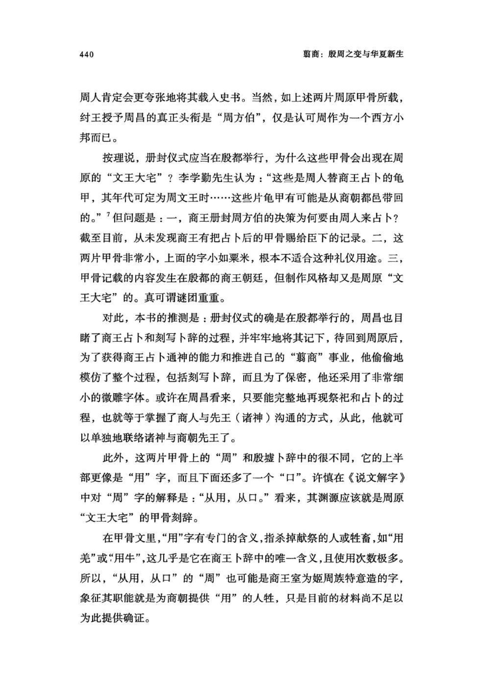
原书阅读器页 455原书物理 PDF 页 453印刷页 441
可见，从战国的《天问》到西汉的《六韬》，再到西晋的《帝王世纪》，伯邑考的遭遇一直在隐秘地流传。
但《帝王世纪》的叙事又有明显的小说化特征。比如，从情理上说，在周昌被囚禁期间，纣王应当不会让伯邑考为自己驾车，这应该是在周昌获释后。再如，说纣王烹杀伯邑考赐周昌是为了验证其是不是“圣人”也当属戏剧化叙事，在之前的《天问》和《六韬》中都没有这种情节。
在传世文献的语境中，纣王制造的杀祭伯邑考事件的野史色彩过重，很难有合理的解释。这可能也是《史记》不愿采纳的原因。但是，根据考古和甲骨文展现的商人的宗教祭祀实践，伯邑考被烹杀和吃掉却又是完全正常的。有学者认为，纣王把人肉酱赐给臣下，是商人传统的一种结盟（兼人祭）仪式，这次把伯邑考的肉酱赐给周昌，应当是册封周昌为“周方伯”典礼的程序之一。[[fn:10]] 本书“文王微雕卜辞的记录”一节介绍的文王地窖中两片甲骨（H11.1，Hll.ll），卜辞内容都关于向先代商王献祭，它们也应当是这次典礼的产物，并且可能是周昌回到周原后的复刻版本。在向诸神敬献后，参与献祭的人分食祭品也是分享诸神带来的福佑。因此，周昌，甚至包括其儿子周发、周旦和周鲜等在内，根本无力对抗纣王的这个决定。为了周邦的生存，他们只能接受商人的宗教礼仪，而且很可能还要尽量表现得心悦诚服和感恩戴德。
如前文所引，《史记•殷本纪》中还有一段与此相似的故事，这便是纣王“醢九侯”“脯鄂侯” “剖比干”。此说虽然可能并不准确，但应该也是纣王用高级贵族献祭在后世的流变。而且，殷墟后冈H10圆形祭祀坑中尸骨不全的贵族一家，也呼应了这个记载。
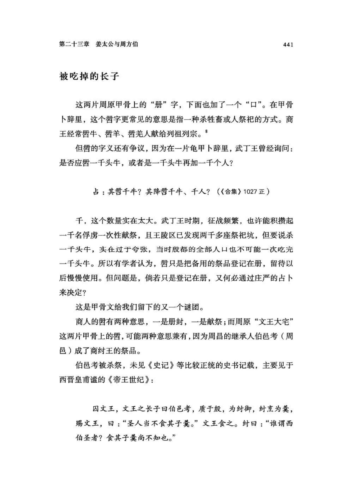
原书阅读器页 456原书物理 PDF 页 454印刷页 442
史书中未见（应该也不会）记载周昌父子分食伯邑考时的心情。不过在后世，有著名的典故“周公吐哺”流传千古。所谓“周公吐哺”，说的就是周公旦经常会吐出正在吃的饭食。已经遗忘了真实的商朝是怎样的后世人却对此进行了合理化解释，说是周公忙于招纳贤人所致。[[fn:11]] 但事实很可能是因被迫吃掉长兄的肉酱，周公留下了严重的心理阴影。而且，不只是周公旦，武王周发此后也一直受到噩梦的困扰，“自夜不寐”。[[fn:12]] 至于文王周昌，则把心史写在了《易经》里。
《易经》的损卦六三爻似乎记录的就是伯邑考被献祭的经历：“三人行，则损一人。一人行，则得其友。”这句爻辞的重点是前面一句，三人结伴同行，但最后损失了一个。这可能是说，文王被囚禁后，包括伯邑考在内的三个儿子赶往殷都营救，但最终损失了一个。如前面章节所述，损卦的卦辞“利有攸往，曷之，用二簋，可用享”说的就是儿子带着一尊酒和两陶盆食物去探望地牢中的周昌。
和损卦成对的是益卦，它们的意思正截然相反。益卦主要是说古公亶父接受商朝的招抚，迁居周原，从此开启了兴盛周族的历程；损卦则主要是说周昌在殷都的惨痛经历。二者构成商周关系在周族三代人之间的转折。
此外，《易经》中可能还记载了伯邑考被献祭的细节。
关于伯邑考的回忆
前面介绍过剥卦，卦象就像是架起的案板，内容则是人牲被屠剥。类似的还有艮卦，两个八卦中的正相重叠，也像是架起来的屠剥案板。
艮其背，不获其身，行其庭，不见其人。无咎。
初六：艮其趾。无咎，利永贞。
六二：艮其腓，不拯其随，其心不快。〔札记：欧巴此爻〕
九三；艮其限，列其夤，厉，薰心。
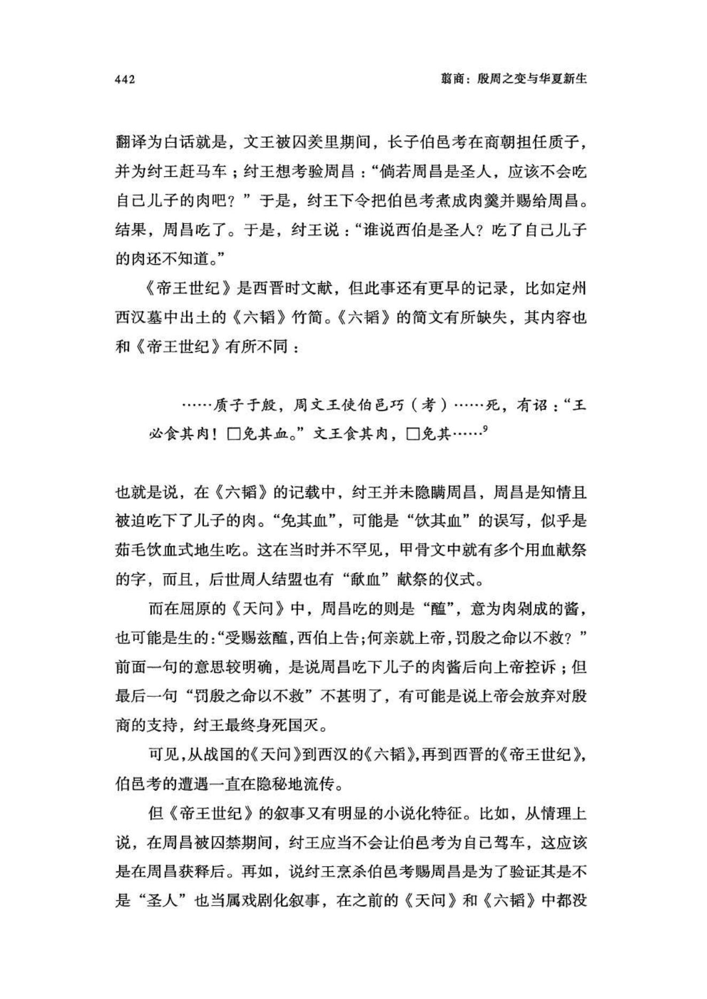
原书阅读器页 457原书物理 PDF 页 455印刷页 443
六四：艮其身，无咎。
六五：艮其辅，言有序，悔亡。
上九：敦艮，吉。[[editor-fn:3]]
艮，在八卦中代表“山”，据唐人孔颖达注，意思是停止。[[fn:13]] 但艮卦的卦爻辞都与“停止”之义无关。在甲骨文和金文中，“艮”的字形像一只大眼睛在朝身后望，《易经》中用的应该就是这个本意，即痛苦而愤怒地凝视。[[fn:14]]
先看卦辞。“行其庭，不见其人”，说的是走在庭院里，再也见不到那个人。这里的“人”，应当是指丧命殷都的长子伯邑考。“艮其背，不获其身”，则应当是说伯邑考的背部被剖开。当时的“菹（zu1）醢”，要先肢解，再把一些肉质较好的部位剁成肉酱。
艮卦的爻辞也和前述剥卦类似，列举了从脚到头六个部位：先是初六爻的“艮其趾”，趾是脚，意思是把脚砍掉；接着是六二爻的“艮其腓，不拯其随，其心不快”，意为抽出肠子时，人牲的脚随之抽搐，最后腿不再动，心也停止跳动；[[fn:15]] 再接着是九三爻的“艮其限，列其夤，厉，薰心”，限是腰部，夤是后脊肉，意为先从背部剖开人牲，取出肌肉组织放在一边，最后掏出心脏，用火烧烤献祭；[[fn:16]] 然后是六五爻的“艮其辅，言有序，悔亡”，辅是面颊，和说话有关，[[fn:17]] 意为当屠剥到面部的时候，周昌可能联想到了某些说错的话，所以觉得后悔；最后是上九爻的“敦艮”，敦是头部，意为把头砍掉。
和艮卦类似的，还有咸卦，它的爻辞中也列举了身体的各部位，如咸其拇（大脚趾）、咸其腓（肠）、咸其股（大腿）、咸其脢（mei2）（脊肉）、咸其辅、咸其颊、咸其舌。
亨，利贞。取女，吉。
初六：咸其拇。
六二：咸其腓，凶。居，吉。
九三：咸其股，执其随。往，吝。
九四：贞吉，悔亡。憧憧（chong1chong1）往来，朋从尔思。
〔编者注3〕艮卦 https://zhuanlan.zhihu.com/p/472723162
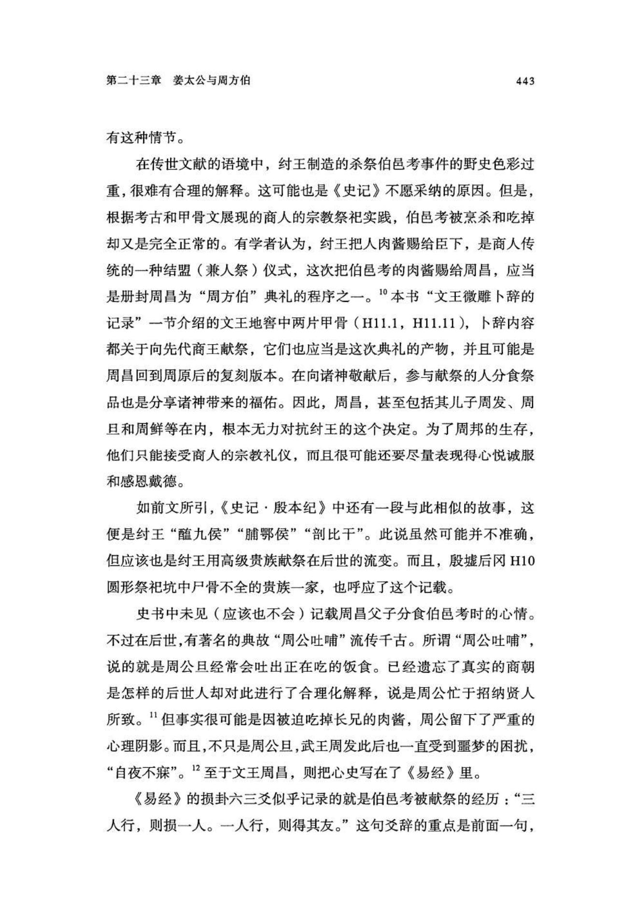
原书阅读器页 458原书物理 PDF 页 456印刷页 444
九五：咸其胸，无悔。
上六：咸其辅、颊、舌。[[editor-fn:4]]
高亨先生认为，“咸”字通“戉（yue4）"咸卦即为用铜钺斩割人牲献祭的记录。[[fn:18]] 从爻辞看，与艮卦和剥卦一样，咸卦也是描述人牲被从脚到头肢解的场景的。可能商人献祭有特定仪轨，屠剥人牲要从脚部开始，依次向上。[[fn:19]]
其中，咸卦的九四爻比较特殊，它没有屠剥的内容，说的是心神不宁地走来走去，朋友们都在想念你。这像是在描述周昌回周原后想起伯邑考时的忧伤。[[fn:20]]
和艮卦成对的是震卦，内容是关于某次雷暴天气的：
亨。震来隙隙，笑言哑哑。震惊百里，不丧匕鬯（chang4；香酒）。
初九：震来隙隙，后笑言哑哑。吉。
六二：震来厉，亿丧贝，跻于九陵。勿逐，七日得。
六三：震苏苏。震行，无眚。
九四：震遂泥。
六五：震往来厉，意无丧，有事。
上六：震索索，视矍矍（jue2jue2），凶。震不于其躬，于其邻。无咎。婚媾有言。[[editor-fn:6]]
在后世《易传》的解读里，震卦被认为代表长子。[[fn:21]] 方卦辞说，正举行祭祀，雷声震动百里，主祭人（或者是文王自己）没有惊落手中舀香酒的勺子，所谓“震惊百里，不丧匕鬯”。这和三国刘备“闻雷失箸”的表现正好相反。
震卦的卦爻辞多数难以解释，满是惊惶情绪，比如，担心会丢失钱币（“亿丧贝”）；雷暴不会劈到自己，但会劈到邻居（“震不于其躬，于其邻”）。尤其上六爻的“婚媾有言”，说的是通婚的亲家有怨言，本书猜测，这可能也和伯邑考被献祭有关，因伯邑考之死，吕尚和周昌之间可能发生了某些争执。一旦失去周邑和邑姜的婚姻纽带，两个家族的联系会变得非常微弱，直到周昌次子周发（武王）娶了这位嫂子。
接下来的问题是，周昌为何要在《易经》里记录儿子被献祭的这些细节？
〔编者注4〕咸卦 https://www.yilusoso.com/lssg/114/
〔编者注6〕震卦 https://zhuanlan.zhihu.com/p/676765989
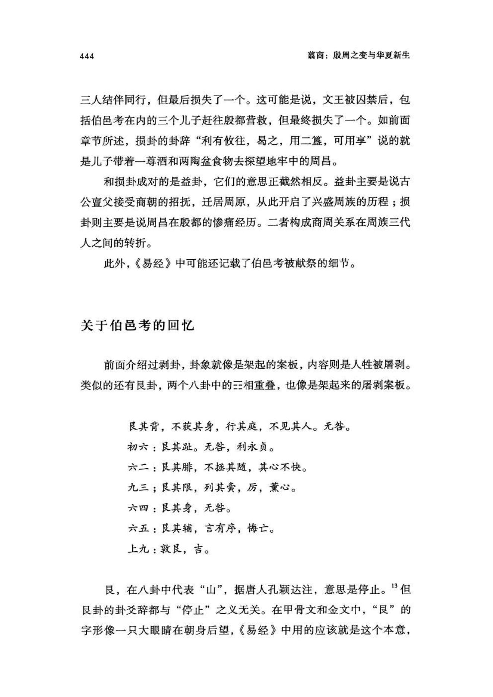
原书阅读器页 459原书物理 PDF 页 457印刷页 445
可能当时的周昌还没有否定商人宗教理论的能力，他只能是接受并认为自己的儿子被献祭给了天界诸神，也许诸神会因此开始青睐周族，转而不再保佑纣王。至少他要把这种可能性纳入《易经》推演的模型之中。
无论怎样，伯邑考被献祭，对于他的父亲和弟弟们来说，是一次极为惊悚的经历，但纣王显然对此深表满意：周方伯家族为商朝的先祖诸神贡献了祭品，还和献祭者一起吃下祭肉，一定会获得先王诸神的福佑。换句话说，在纣王看来，周邦正在从蒙昧走向开化，在商朝的天地秩序里找到了属于他们自己的位置。
文王诅咒殷商
不仅长子伯邑考在殷都被献祭，甚至周昌的父亲季历当年也是这种遭遇，只是保留下来的信息太少。我们很难设身处地地想象周昌对殷都的感受。
《诗经•大雅•荡》是一首文王控诉商朝的长诗，在其中，文王讲述了商王朝的强大、跋扈、纵酒、狂暴和喧哗。诗里有很多商纣王的影像，但又不仅仅是纣王，其贵族以至平民都陷入了纵欲、施暴和凌辱他人的依赖症。考虑到后世经学家对此诗的注解大都空泛而不切题，这里重新翻译如下：
荡荡上帝，下民之辟。疾威上帝，其命多辟。天生烝（zheng1）民，其命匪堪。靡不有初，鲜克有终。
〔札记：靡不有初，鲜克有终。〕
［那公正全能的上帝，是尘世万民的依赖；那敏锐威严的上帝，他降下的天命是真正的准则。上天创生黎民，天命如此忠厚。一切人都被上天赋予开端，但少有人能够善终。］
文王曰咨，咨汝殷商！曾是强御，曾是掊（pou2）克。曾是在位，曾是在服。天降滔德，女兴是力。
［文王说：啊，你殷商啊，现在你强大无敌，现在你骄狂跋扈，现在你统治一切，现在一切都臣服于你。当初，是上天降下的好意，让你兴旺如此。］
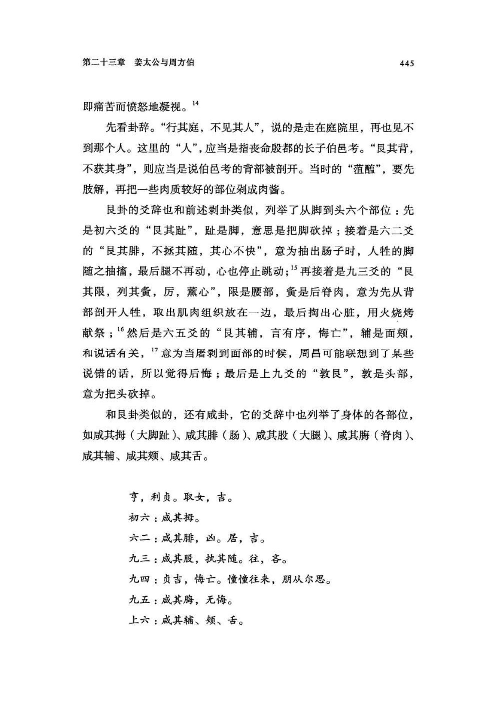
原书阅读器页 460原书物理 PDF 页 458印刷页 446
文王日咨，咨汝殷商！而秉义类，强御多怼。流言以对，寇攘式内。侯作侯祝，靡届靡究。
［文王说：啊，你殷商啊，你本该行善，却强横充满怨气。你听信各种谣言，重用为恶之辈。你不停兴建工程，奉献祭品，永远没有休止。］
文王曰咨，咨汝殷商！女炰烋（pao2xiao1；咆哮）于中国，敛怨以为德。不明尔德，时无背无侧。尔德不明，以无陪无卿。
［文王说：啊，你殷商啊，你在中土之国昂然自得，引起无数怨恨，却以为我们只有感激。我们从未见到你的好意，你会慢慢失去支持者；你的好意从未曾显露，最终没人会在你身边。］
文王日咨，咨汝殷商！天不湎尔以酒，不义从式。既愆尔止，靡明靡晦。式号式呼，俾昼作夜。
［文王说：啊，你殷商啊，上天不愿让你沉沦在酒中，你却不肯遵从。你的行为荒唐悖谬，不分阴晴都在纵饮。你狂呼乱叫，白天也沉醉如黑夜。］
文王曰咨，咨汝殷商！如蜩如螗，如沸如羹。小大近丧，人尚乎由行。内奰（bi4）于中国，覃及鬼方。
［文王说：啊，你殷商啊，你大醉喧哗，如众蝉鸣叫，如滚汤沸腾。不论贵族还是小民，都沉溺在恶行中。你在中士震怒，甚至波及遥远的鬼方。］
文王曰咨，咨汝殷商！匪上帝不时，殷不用旧。虽无老成人，尚有典刑。曾是莫听，大命以倾。
［文王说：啊，你殷商啊，不是上帝改变了意旨，是你殷商不再有当年的品行。你虽然没有了德高望重之人，也还有昔日留下来的典章先例。这些你都不想遵从，你的大命即将倾倒。］
文王曰咨，咨汝殷商！人亦有言：颠沛之揭，枝叶未有害，本实先拨。殷鉴不远，在夏后之世！〔札记：殷鉴不远〕
［文王说：啊，你殷商啊，就像人们常说的，颠沛覆亡来临时，大树的枝叶还未损伤，树干会先倒掉。端盆水照照你自己吧，殷商，夏朝灭亡的往事又要重演了！］[[editor-fn:8]]
〔编者注8〕大雅 荡 https://baike.baidu.com/item/%E5%A4%A7%E9%9B%85%C2%B7%E8%8D%A1/2003378
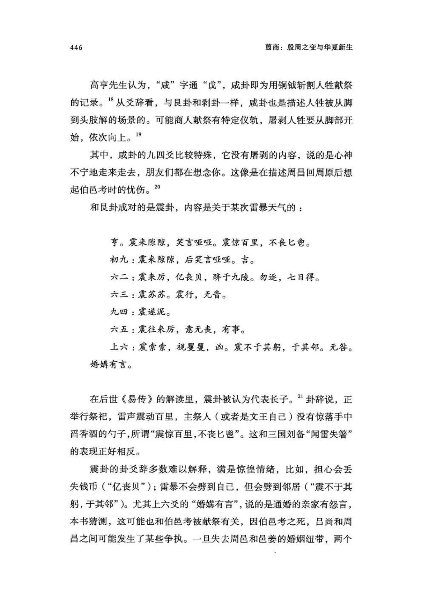
原书阅读器页 461原书物理 PDF 页 459印刷页 447
倘若仅有这些文字，它只不过是一篇言过其实的政治宣言而已；但有了殷墟考古，则能看到祭祀坑中的累累骷髅、殿堂夯土下蜷曲的奠基人、被抛弃在灰坑中的卑微死者以及屠宰场兽骨坑中混杂的人骨。这就是文王周昌曾经在殷都亲历过的商文明中的庸常生活，泡在泥水里的猪，成串捆绑的俘，被烹食的方伯……
其实，不需要到过殷都，近在西安老牛坡的崇侯之国也足以让周人认识商朝，他们蜷伏在这个王朝脚下的岁月已经足够漫长。
注释
1《尉缭子•武议》。另，《说苑》卷八：“太公望，故老妇之出夫也，朝歌之屠佐也，棘津迎客之舍人也“。
2在西周初年，殷都被周公强行废弃，周公同时分封了一个弟弟（康叔周封）建立卫国，管理商朝故地，卫国的都城建在朝歌，致后人误以为朝歌就是殷都。
3《诗经•大雅•文王》孔颖达正义引皇甫谧（即《帝王世纪》）：“（文王）未受命时已得太公。”受命即文王从殷都返回周原之后称王。
4 中国社科院考古所安阳工作队：《1986—1987年安阳花园庄南地发掘报告》，《考古学报》1992年第1期。有关殷墟花园庄南地考古的基本信息、数据及图片，未注明出处的，皆出自该发掘报告，不再详注。
5 “元夫”，高亨认为“元”是“大也”。参见高亨《周易古经今注》，第271页。
6 陈全方：《周原与周文化》，第111页。
7 李学勤：《西周甲骨的几点研究》。
8王宇信：《周原庙祭甲骨“（册口）周方伯”辨析》，《文物》1988年第6期。
9 河北省文物研究所定州汉墓竹简整理小组：《定州西汉中山怀王墓竹简〈六韬〉 释文及校注》，《文物》2001年第5期。
10 代生，江林昌：《出土文献与〈天问〉所见商末周初史事》，《四川师范大学学报（社会科学版）》，2022年第1期。
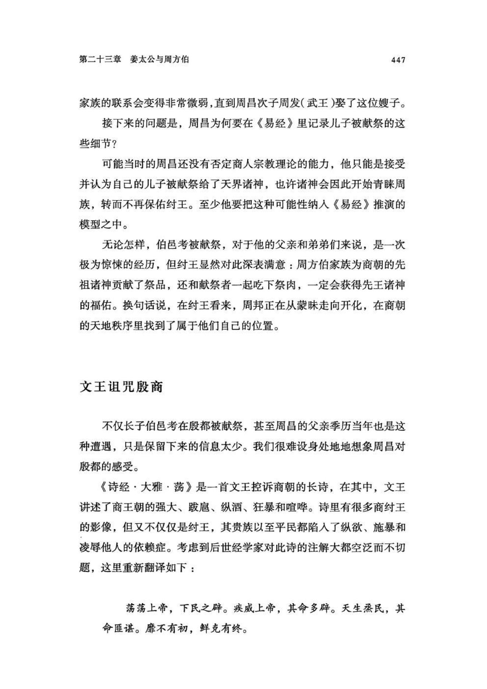
原书阅读器页 462原书物理 PDF 页 460印刷页 448
11《史记•鲁周公世家》载，周公戒伯禽曰：“我文王之子，武王之弟，成王之叔父，我于天亦不贱矣。然我一沐三捉发，一饭三吐哺，起以待士，犹恐失天下之贤人。子之鲁，慎无以国骄人。”
12《史记•周本纪》：“武王征九牧之君，登豳之阜，以望商邑。武王至于周，自夜不寐。”
13 孔颖达正义：“艮，止也，静止之义。”《易传•说卦》：“艮为山。”
14 段玉裁《说文解字注》认为艮字是“若怒目相视也”，高亨认为：“艮者顾也…… 顾为还视之意，引申为注视之意。”参见高亨《周易古经今注》，第311页。
15 孔颖达正义：“腓，肠也……腓动，则足随之，故谓足为随。”
16 孔颖达解释：限，为“身之中，人带之处”，就是腰带部位；夤，是“当中脊之肉也”，后脊背上的肉；“薰，烧灼也”。
17 王弼注：“故口无择言，能亡其悔也。”
18 高亨：《周易古经今注》，第250页。
19 李镜池较早注意到了《易经》各卦这种从脚到头的叙事顺序，参见李镜池《周原探源》，中华书局，1978年，第54页。
20 憧，《说文解字》解释为“意不定也”。
21《易传•序卦》：“主器者莫若长子，故受之以震。”《易传•说卦》：“震为雷、为龙……为长子“。
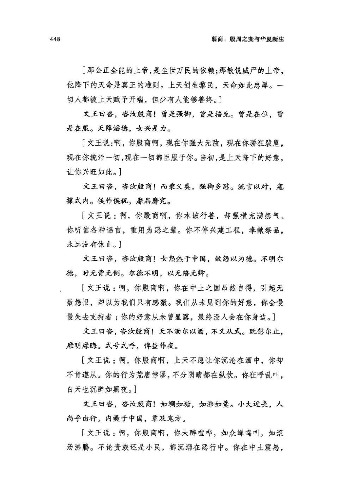
原书阅读器页 463原书物理 PDF 页 461印刷页 449
[[editor-fn:5]]
〔编者注5〕待再校对一遍，填充待核。
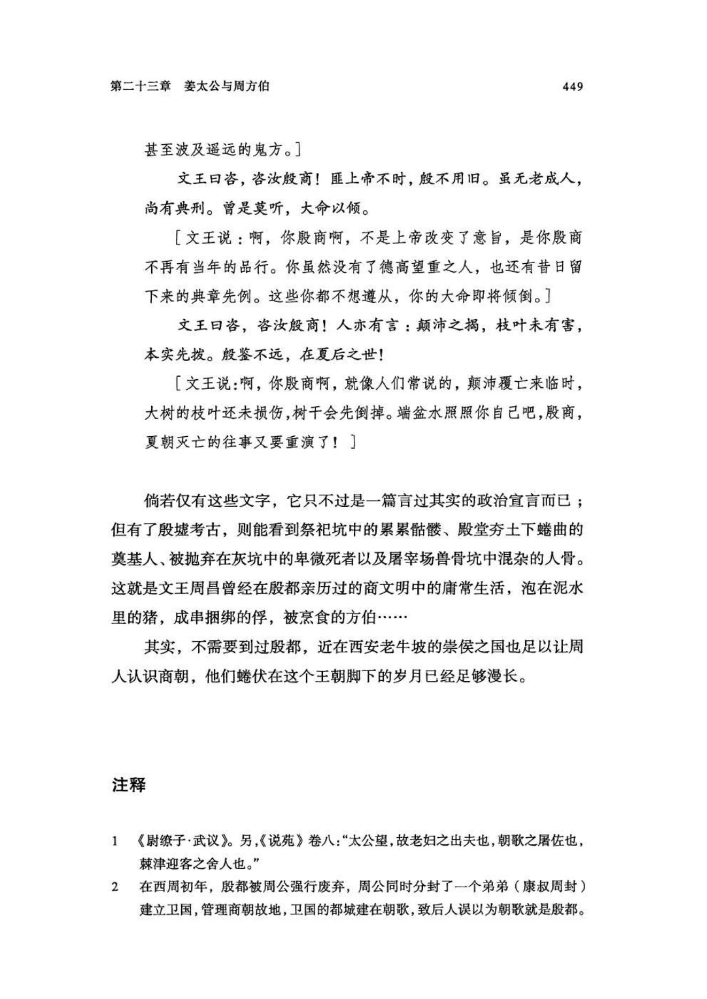
原书阅读器页 464原书物理 PDF 页 462印刷页 450
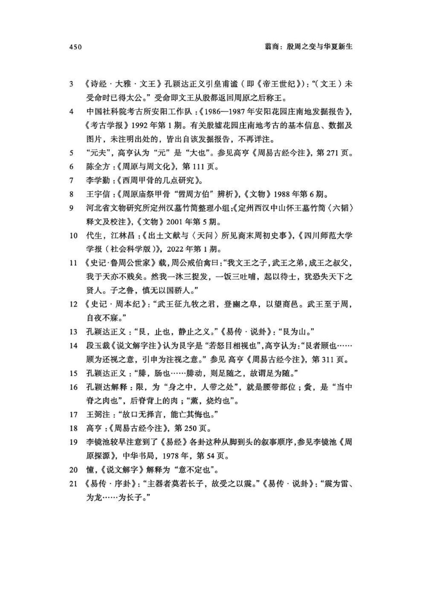
编辑札记
标记
先在正文中选择文字，再输入拼音；可用“拼音；简注”。